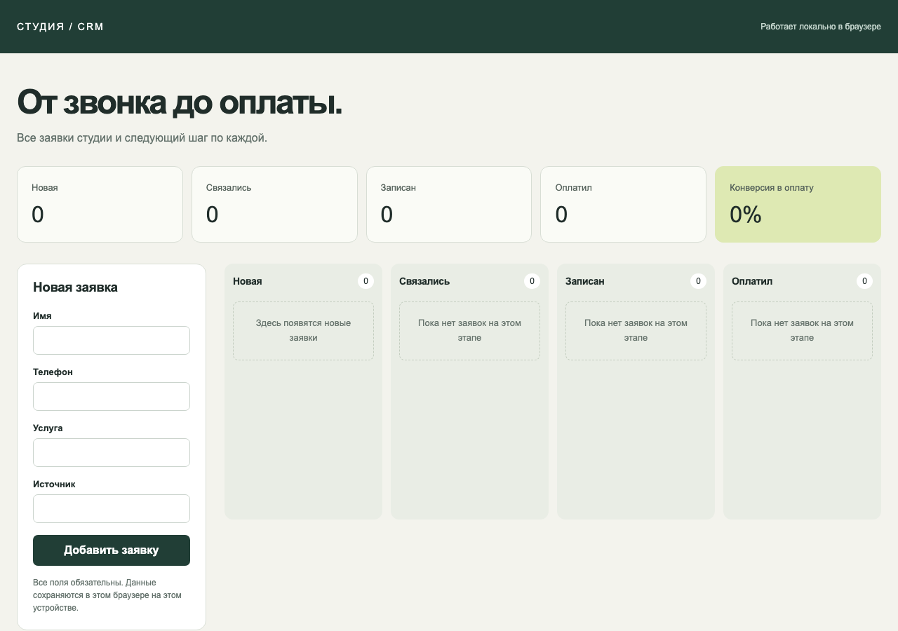
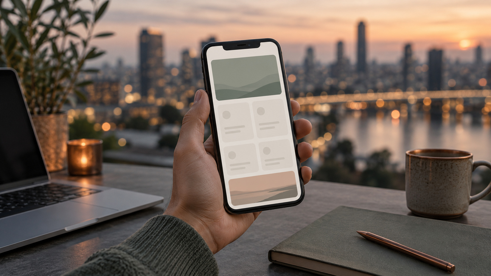

AI Цех · Поток 3 · Занятие 4 · 5 октября 2026 · Уфа
Своё приложение:
от идеи до живой ссылки
Каждый собирает своё приложение. Claude думает и проверяет, Кодекс собирает. Уходим с первой работающей версией и ссылкой, которая открывается с телефона
Что унесёте сегодня
Своё приложение
Заказ, план и первая версия, которая открывается и работает. Не калькулятор, а маленький сервис для себя.
Связка Claude и Кодекса
Claude думает, пишет план и принимает работу. Кодекс собирает. Как два сотрудника.
Живая ссылка
Приложение на Vercel. Открываете с телефона и кидаете в чат.
Маршрут урока: восемь шагов
| Время | Шаг | Что получаем |
|---|---|---|
| 19:00 | 0. Сверка | Агент знает вас, навыки на месте |
| 19:10 | Как делается продукт | Круг из шести шагов, роли Claude и Кодекса |
| 19:20 | 1. Своё приложение | Файл ЗАКАЗ-НА-ПРОЕКТ.md, две строки в чат |
| 19:40 | 2. Разведка | Три похожих решения с GitHub |
| 19:50 | 3. План | Файл plan.md, кода ещё нет |
| 20:05 | 4. Сборка связкой | index.html, который открывается |
| 20:30 | 5. Проверка | Таблица: что проверил и что починил |
| 20:40 | 6. Живая ссылка | Ссылка с телефона в чате |
| 20:55 | 7. Домашка | Задача на неделю |
Метод тот же, что в первых потоках Цеха
| Поток 1 · Правильный старт | Сегодня |
|---|---|
| Замысел | Шаг 1. Агент по вашим ответам предлагает 10 идей, вы выбираете одну |
| Контекст | Заказ на проект из 9 разделов, как в потоке 2 |
| Сверка | Шаг 3. Агент пересказывает задачу и задаёт до трёх вопросов |
| Разведка | Шаг 2. Три похожих решения на GitHub |
| Решение и чертёж | План в файле plan.md |
| Первый камень | Шаг 4. Кодекс собирает по плану |
| Сверка с чертежом (поток 2) | Шаг 5. Claude проверяет и чинит |
| Публикация (поток 2) | Шаг 6. GitHub и Vercel |
Шаг 0 · 10 минут
Сверка:
агент вас знает
Если агент вас не знает, дальше всё пойдёт мимо. Две минуты проверки, и только потом своё приложение
Промпт 0 · Claude, ваша папка, новый чат
Не открывай файлы. Что ты знаешь обо мне по своим инструкциям? И перечисли навыки, которые тебе сейчас доступны, только названия.
Если на сверке не так
| Что видите | Что делать |
|---|---|
| Агент вас не знает | Промпт «Один файл правил» из шпаргалки (раздел «Подготовка»), отвечаете «да», потом новый чат |
| Нет навыков superpowers и frontend-design | Customize → Plugins → Discover, найти superpowers и frontend, нажать «+», новый чат |
| Кодекс пишет «модель не поддерживается» | Посмотреть модель в приложении Кодекса и сказать Claude: «впиши эту модель в настройки Кодекса» |
| Навыки есть, но агент их не видит | Навыки видны только в новом чате. Customize → Plugins: пометки Disabled быть не должно |
Карта понятий: одна на весь курс
| Понятие | Что это |
|---|---|
| AGENTS.md | Правила компании и «кто я», читаются всегда. |
| Навык | Регламент одной операции, «как делать». Доступа ни к чему не даёт. |
| Коннектор | Пропуск к программе (почта, диск, календарь). Даёт «руки», но не «как». Внутри это MCP. |
| MCP | Общий стандарт таких пропусков, один на всех агентов. |
| API | Служебный вход программы, открывается ключом. |
| Плагин | Стартовый набор отдела одним пакетом. Внутри могут быть навыки, коннекторы, команды. |
Рассказ · 10 минут
Как делается
продукт
Продукт начинается не с кода, а с заказа. Сначала поняли, что строим, посмотрели, что уже есть, написали план, и только потом агенты собирают и сами себя проверяют
Вайб-кодинг и профессиональная сборка
Вайб-кодинг
«Сделай приложение для записи клиентов», посмотрим. Агент додумывает сам: какие клиенты, какие поля, нужен ли вход, нужна ли оплата. И попадает мимо.
Работа по кругу
Тот же агент, только по кругу и с проверками: заказ, разведка, план, сборка, проверка, публикация. И потом снова.
Круг из шести шагов
Заказ
Что строим, для кого, что это высвобождает
Разведка
Что похожее уже есть на GitHub
План
Агент пересказал задачу, мы подтвердили, план в файле
Сборка
Кодекс собирает по плану
Проверка
Claude проходит по пунктам и чинит ошибки
Публикация
Живая ссылка. Дальше снова по кругу
Связка: Claude думает, Кодекс делает
Claude
Помогает выбрать приложение, пишет план, потом принимает работу и проверяет её.
Кодекс
Собирает по плану. Одна модель, ничего не выбираем и не переключаем.
Как они связаны
Claude сам запускает Кодекс одной командой и отдаёт ему план. Ставить ничего не нужно.
Так выглядит первая версия после связки

План от Claude
Мини-CRM для студии: заявки, четыре колонки от звонка до оплаты, счётчики сверху.
Кодекс собрал за 4 минуты
Одна страница, данные хранятся в браузере, всё сохраняется после перезагрузки.
Проверка
Кодекс сверил код с планом, ошибок не нашёл. У Данила на Windows проверка нашла и починила три.
Где ещё работает связка: десять примеров
Шаг 1 · 20 минут
Своё
приложение
Вчера вы ответили агенту на четыре вопроса про прошлую неделю. Сегодня по ответам он предлагает 10 идей, оставляет три, а одну выбираете вы
Какое приложение берём
Не калькулятор
Маленький сервис для себя: сводка заказов, светофор оплат, мини-CRM, кабинет клиента.
Одна страница
Данные в браузере или из вашего файла. Без сервера, без входа по логину, без настоящих данных клиентов.
Три действия
Ядро первой версии не больше трёх действий. Всё большое уходит в раздел «Куда растём».
Уровень, который нужен: десять примеров
Что делает промпт 1
Читает ваши ответы
Файл otvety-k-uroku-4.md. Файла нет: сначала задаст четыре вопроса
Предлагает 10 идей
Только то, что собирает агент-программист: экран, данные, кнопки
Оставляет три
И объясняет выбор. Одну выбираете вы
Держит размер
Одна страница, данные в браузере, не больше трёх действий
Пишет заказ
Показывает текст, ждёт «да» и кладёт файл в папку prilozhenie
Заказ на проект: девять разделов
| Раздел | Зачем |
|---|---|
| 1. Замысел | Одна фраза: что это |
| 2. Для кого | Кто пользуется и на чём |
| 3. Боль | Что сейчас плохо |
| 4. Что высвобождает | Часы или рубли в неделю |
| 5. Данные на руках | Чем наполнить уже сегодня |
| 6. Ядро первой версии | Не больше трёх действий |
| 7. Что не делаем сейчас | Не меньше пяти пунктов |
| 8. Готово, когда | По чему видно, что работает |
| 9. Куда растём | Всё большое, на потом |
Практика: свой заказ
Вставьте промпт 1. Выберите одну идею из трёх. Прочитайте заказ: согласны, пишите «да», нет, поправьте словами.
Если на шаге 1 не так
| Что видите | Что написать агенту |
|---|---|
| Файла с ответами нет | Ничего, агент сам задаст четыре вопроса, отвечайте по строке |
| Не можете выбрать | «Как рекомендуешь» |
| Идея разрослась: сервер, логин, банк, CRM | «Держи размер первой версии из промпта» |
| Агент запускает навыки «Бизнес РФ» | «Навыки не запускай, работай по промпту» |
Шаг 2 · 10 минут
Разведка:
что уже есть
Почти всё уже придумано до нас. Это не значит, что мы воруем. Это значит, что мы не строим в темноте
Промпт 2 · тот же чат
Разведка перед сборкой. Прочитай prilozhenie/ЗАКАЗ-НА-ПРОЕКТ.md. Найди на GitHub 3 похожих открытых решения. По каждому: название и ссылка, что умеет, звёзды, когда последний раз обновлялся, лицензия, что из него взять в мою первую версию. Ничего не скачивай и не устанавливай, чужой код не копируй, только посмотри. В конце одной фразой: что берём как идею, что режем.
Шаг 3 · 15 минут
План
до кода
Самый важный момент урока. Не просим код, просим понять задачу. Если агент понял неправильно, красивый код только быстрее уведёт не туда
Промпт 3 · тот же чат
Сверка и план перед сборкой. Используй навык brainstorming из Superpowers, но коротко: заказ уже готов в prilozhenie/ЗАКАЗ-НА-ПРОЕКТ.md, разведка выше в этом чате. 1. Перескажи своими словами, что строим, для кого и что будет в первой версии. Задай не больше трёх вопросов, по одному, и к каждому дай свой вариант ответа. 2. После моего «да» запиши план сборки в файл prilozhenie/plan.md: что на экране, какие данные и где они хранятся, три действия ядра по шагам, как проверить по разделу «Готово, когда». Одна страница index.html: HTML, CSS, JavaScript, без сервера и без библиотек из интернета. 3. Код не пиши, git и коммиты не трогай, отдельных файлов спецификации не создавай: только plan.md.
Шаг 4 · 25 минут
Сборка
связкой
Claude сам запускает Кодекс и отдаёт ему план. Кодекс работает несколько минут, в чате тишина: это нормально, ничего не нажимаем
Промпт 4 · тот же чат
Сборка связкой с Кодексом. 1. Запусти Кодекс одной командой в папке prilozhenie: codex exec -s workspace-write --skip-git-repo-check "Прочитай plan.md и ЗАКАЗ-НА-ПРОЕКТ.md и сделай по ним index.html: одна страница, HTML, CSS, JavaScript, без сервера и без библиотек из интернета, данные в браузере". На Windows вместо codex пиши codex.cmd и добавь в конце команды < NUL, на Mac добавь < /dev/null, иначе Кодекс ждёт ввода. Кодекс работает несколько минут: дождись, пока он закончит. 2. Когда Кодекс закончит, открой prilozhenie/index.html и сверь с разделом «Готово, когда» по пунктам: что работает, чего не хватает. 3. Покажи мне страницу.
Если сборка не идёт
| Что видите | Что делать |
|---|---|
| «running scripts is disabled» | На Windows команда codex.cmd. Промпт это уже говорит, напомните агенту |
| Кодекс ответил, а файла нет | В команде должно быть -s workspace-write |
| Кодекс не вошёл | Попросите Claude запустить codex login, на Windows codex.cmd login |
| Кодекс работает больше 10 минут | Смотрим пример у ведущего, доделываем дома по своему plan.md |
Шаг 5 · Красивый экран ещё ничего не доказывает
Как пользователь
Агент проходит каждый пункт «Готово, когда» сам.
Код
Нет ключей, паролей и настоящих данных клиентов. Что будет с пустыми полями.
Телефон
Как страница выглядит на маленьком экране.
Нашёл ошибку
Чинит минимальной правкой и проверяет ещё раз.
Промпт 5 · тот же чат
Проверка перед публикацией. Работай с prilozhenie/index.html. 1. Пройди по разделу «Готово, когда» в prilozhenie/ЗАКАЗ-НА-ПРОЕКТ.md: открой страницу и проверь каждый пункт сам, как пользователь. 2. Посмотри код на ошибки и безопасность: нет ли ключей, паролей и настоящих данных клиентов; что будет с пустыми полями; как страница выглядит на телефоне. 3. Нашёл ошибку: почини минимальной правкой и проверь ещё раз. Не переписывай всё. 4. В конце таблица: что проверил, как проверил, результат.
Шаг 6 · 15 минут
Живая
ссылка
GitHub хранит код, Vercel показывает сайт. Выкладываем только папку prilozhenie: ваши правила и личные файлы никуда не уходят
Где живёт приложение: четыре места
Папка на компьютере
prilozhenie: здесь мы его собирали
GitHub
Склад кода. Приватный репозиторий, видите только вы, хранится каждая версия
Vercel
Витрина. Берёт код с GitHub и показывает его как сайт
Ссылка
Открывается с любого телефона. Обновили код на GitHub, Vercel сам обновил сайт
Что такое Vercel
Витрина для кода
Берёт ваш репозиторий с GitHub и превращает его в сайт со ссылкой.
Бесплатно для своих проектов
Бесплатный тариф Hobby для личных некоммерческих проектов.
Обновляется сам
Новая версия на GitHub, и через минуту она на сайте. Ничего не перезаливаем.
Промпт 6 · тот же чат
Публикуем первую версию. Выкладываем только папку prilozhenie, мои правила и остальные файлы не трогаем. 1. Проверь, что я вошёл в GitHub через gh: gh auth status. Не вошёл: запусти gh auth login с входом через браузер, покажи мне одноразовый код и адрес, код я введу сам. 2. В папке prilozhenie: создай git-репозиторий, файл .gitignore, первый коммит «Первая версия». Создай приватный репозиторий на GitHub с именем папки и отправь туда: gh repo create prilozhenie --private --source . --push. 3. Дай мне ссылку на репозиторий и напиши шаги для Vercel: vercel.com → Add New → Project → Import этого репозитория → Deploy. После публикации: Settings → Deployment Protection → Vercel Authentication выключить → Save, иначе по ссылке будут просить вход.
На vercel.com руками: пять шагов
Add New → Project
Кнопка справа вверху
Import
Выбрать репозиторий prilozhenie. Первый раз Vercel попросит доступ к GitHub
Deploy
Ждём около минуты, появится ссылка
Settings → Deployment Protection
Выключить Vercel Authentication, Save. Иначе по ссылке у всех просят вход
Ссылка с телефона
Открыть и кинуть в чат. Открылась у соседа: это настоящая живая ссылка

Если ссылка не работает
| Что видите | Что делать |
|---|---|
| По ссылке просят войти | Не выключена защита: Settings → Deployment Protection → Vercel Authentication выключить → Save |
| Регистрацию Vercel отправили на проверку | Смотрите показ ведущего, публикацию доделаете дома |
| Агент пишет, что программы gh нет | Попросите агента поставить GitHub CLI и повторить промпт 6 |
| Не успели | Не страшно: публикация по шпаргалке дома, страница уже работает у вас на компьютере |
Домашка
Что сделать
Довести первую версию по своему заказу до пункта «Готово, когда».
Что прислать
Ссылку на приложение и две строки: что работает и что дальше.
Куда
В тему «Общение». В «Домашках и материалах» только задания от нас.
Застряли
Напишите, на каком шаге и что ответил агент.
Формула урока
Сначала заказ,
потом план
Потом разведка готового. Решаю я, Claude думает и проверяет, Кодекс собирает. И снова по кругу